Welcome to the Trip ⚓
Eleven nights on Celebrity Silhouette, round-trip out of Boston — Rockland, Halifax, Sydney, an overnight in Québec City, Charlottetown, and Portland, with three sea days worked in between. This is every shore excursion Celebrity is currently offering on this exact sailing (Sep 24 – Oct 5, 2027), organized by the day you'd actually take it, so all 16 of us can compare options and pick what sounds good — together or split up.
Each excursion below links straight to its live page on Celebrity's site to book — prices shown are the current "from" rate per person and carry a pre-cruise discount that typically improves closer to sailing, so treat them as a snapshot, not a locked-in price. This page works offline once it's loaded, except the Trip Map above and the booking links, which need a connection.
To see and book every excursion on this trip, go to Celebrity's Cruise Planner: Shore Excursions — Celebrity Cruise Planner →
Trip at a Glance 🗓️
Eight port days, three sea days, 74 excursions between them. Full detail for each port is below this table.
| Day | Date | Port | Excursions |
|---|---|---|---|
| Day 1 | Fri 9/24 | Boston | Embarkation |
| Day 2 | Sat 9/25 | Rockland, Maine | 9 |
| Day 3 | Sun 9/26 | Halifax, Nova Scotia | 12 |
| Day 4 | Mon 9/27 | Sydney, Nova Scotia | 12 |
| Day 5 | Tue 9/28 | At sea | — |
| Day 6 | Wed 9/29 | Québec City, Québec | 15 (spans both days) |
| Day 7 | Thu 9/30 | Québec City, Québec | |
| Day 8 | Fri 10/1 | At sea | — |
| Day 9 | Sat 10/2 | Charlottetown, PEI | 12 |
| Day 10 | Sun 10/3 | At sea | — |
| Day 11 | Mon 10/4 | Portland, Maine | 12 |
| Day 12 | Tue 10/5 | Boston | 2, then disembarkation |
Trip Map 🗺️
Every port your ship calls at, in order, plus a handful of the excursions' biggest sights. House pins are the ports where Silhouette docks each day; eye pins are stand-out sights mentioned in the excursions below. The dashed teal line traces the route the ship actually sails, port to port, out of and back into Boston. The big red ship pin is where the cruise starts and finishes: Flynn Cruiseport Boston.
💡 Tap or click any pin for what it is and a link straight into Google Maps. Pinch or scroll to zoom, drag to pan, and use the button for a fullscreen view. This part of the page needs a connection to load the map tiles — the rest of the guide works fine offline.
Day 1 — Boston, Massachusetts ⚓
Embarkation day — Fri 9/24. Silhouette sails from Flynn Cruiseport Boston (the ship pin on the Trip Map), and there are no shore excursions today.
Day 2 — Rockland, Maine 🦞
The quintessential Maine coast — Rockland's working harbor gives way to Camden's postcard village and the summit of Mount Battie, with Owls Head's antique aircraft collection and Boothbay's botanical gardens as the two detours from the Camden theme.
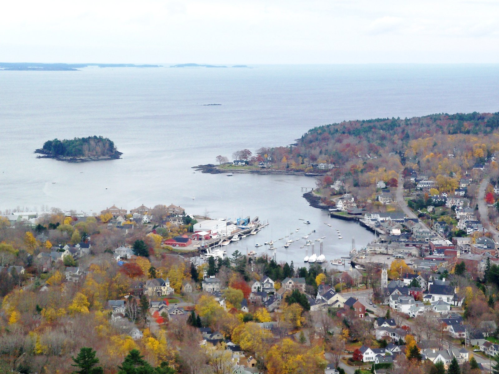
⛵ Independent Exploration: Camden Transfer
3 hr 45 min · 9:30 am, 11:15 am · Activity level: Mild · $135/adult · $121/child
Find the quintessential New England experience on a visit to the charming, bustling harbor town of Camden, where you are free to shop, explore, and indulge in local, fresh seafood favorites.
🎟️ View & book on Celebrity Cruises
🚤 Destination Highlight: Camden by Land and Sea
5 hr 15 min · 8:30 am · Activity level: Moderate · $330/adult · $264/child
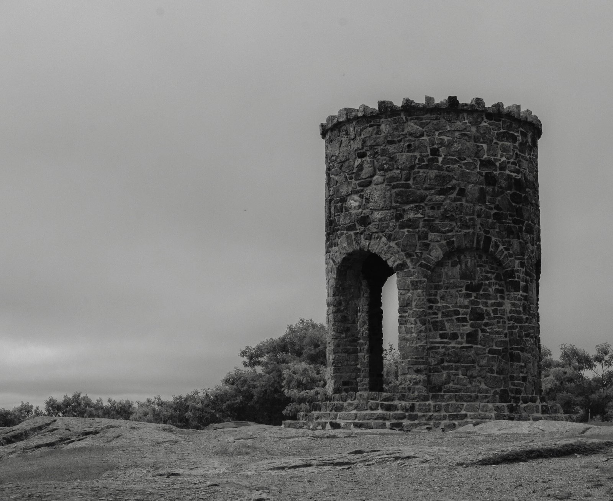
Enjoy New England's mesmerizing coastal scenery on a drive to the charming harbor town of Camden to set sail on the glimmering Penobscot Bay.
🎟️ View & book on Celebrity Cruises
🏛️ Destination Highlight: Farnsworth, Camden and Mt. Battie
4 hr 30 min · 8:30 am, 10:30 am · Activity level: Moderate · $161/adult · $129/child
Take in the scenery of Mid-coast Maine, enjoy time on your own to explore the picturesque seaside village of Camden and visit the Farnsworth Art Museum, home to over 10,000 works of 19th-century American art.
🎟️ View & book on Celebrity Cruises
✈️ Destination Highlight: Owls Head Transportation Museum and Lighthouse
2 hr 45 min · 9:00 am, 12:15 pm · Activity level: Mild · $137/adult · $109/child
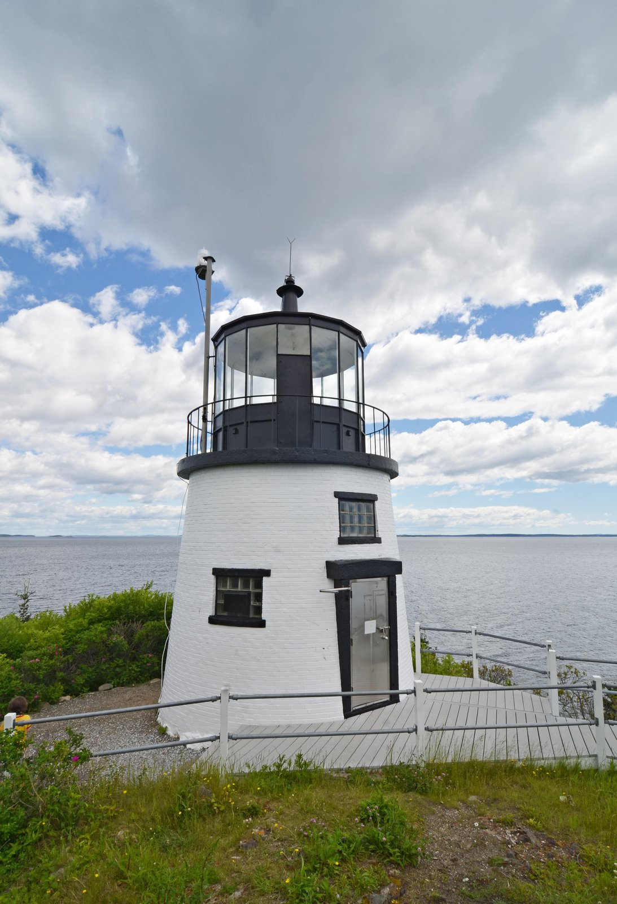
Visit the Owls Head Transportation Museum's landmark collection of antique aircraft, automobiles and carriages — maintained in operating condition, with a chance to ride in a Ford Model T.
🎟️ View & book on Celebrity Cruises
🏔️ Destination Highlight: Camden and Mt. Battie
4 hr · 8:30 – 11:00 am · Activity level: Moderate · $124/adult · $99/child
Drive New England's picturesque coastline to the summit of Mount Battie for views over Penobscot Bay, then explore the harbor village of Camden on your own.
🎟️ View & book on Celebrity Cruises
🦞 Small Group: Rockland Foodie Walking Tour
2 hr 30 min · 10:45 am · Activity level: Moderate · $201/adult · $154/child
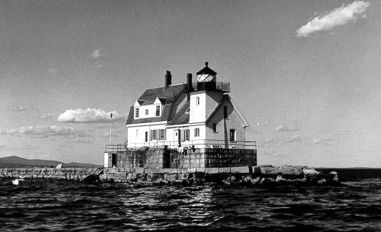
Sample Maine's specialties — lobster rolls, chowder, oysters, artisanal cheese — at some of Rockland's best local eateries on a guided culinary walk through downtown.
🎟️ View & book on Celebrity Cruises
🌷 Destination Highlight: Coastal Botanical Gardens and Boothbay Harbor
5 hr 15 min · 8:15 am · Activity level: Moderate · $163/adult · $146/child
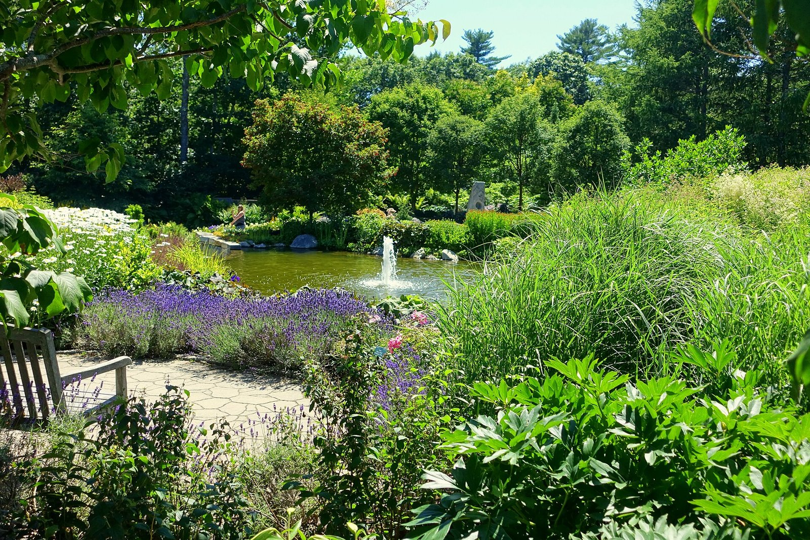
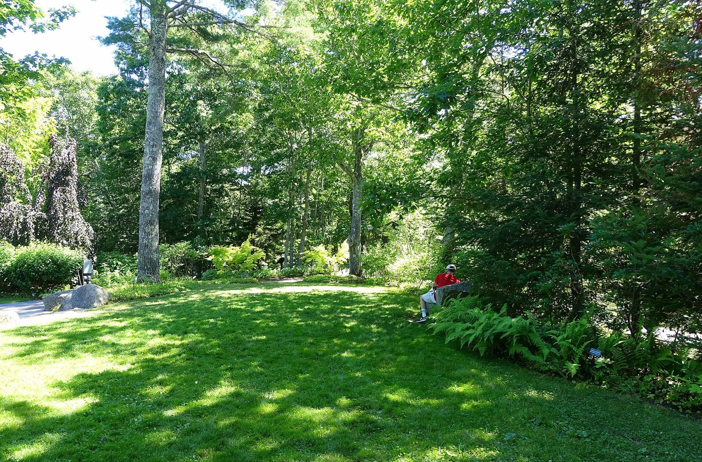
A guided walk through the 295-acre Coastal Maine Botanical Gardens, followed by free time in the charming village of Boothbay Harbor.
🎟️ View & book on Celebrity Cruises
🍷 Destination Highlight: Wine Tasting and Free Time in Camden
3 hr 45 min · 10:00 am · Activity level: Moderate · $151/adult · $121/child
Tour a local vineyard and taste red and white varietals at the restored Cellardoor Winery, with time afterward to explore the village of Camden.
🎟️ View & book on Celebrity Cruises
📸 Camden & Mount Battie Panoramic
1 hr 30 min · 9:00 am · Activity level: Moderate · $112/adult · $76/child
A short scenic drive from Rockland through Rockport to the windswept summit of Mount Battie — classic Maine coastal views without a big time commitment.
Day 3 — Halifax, Nova Scotia 🌊
Nova Scotia's capital, mixing Victorian gardens and a lively waterfront with two of the region's most-visited sites: the fishing village of Peggy's Cove and the cemetery where 121 Titanic victims are buried.
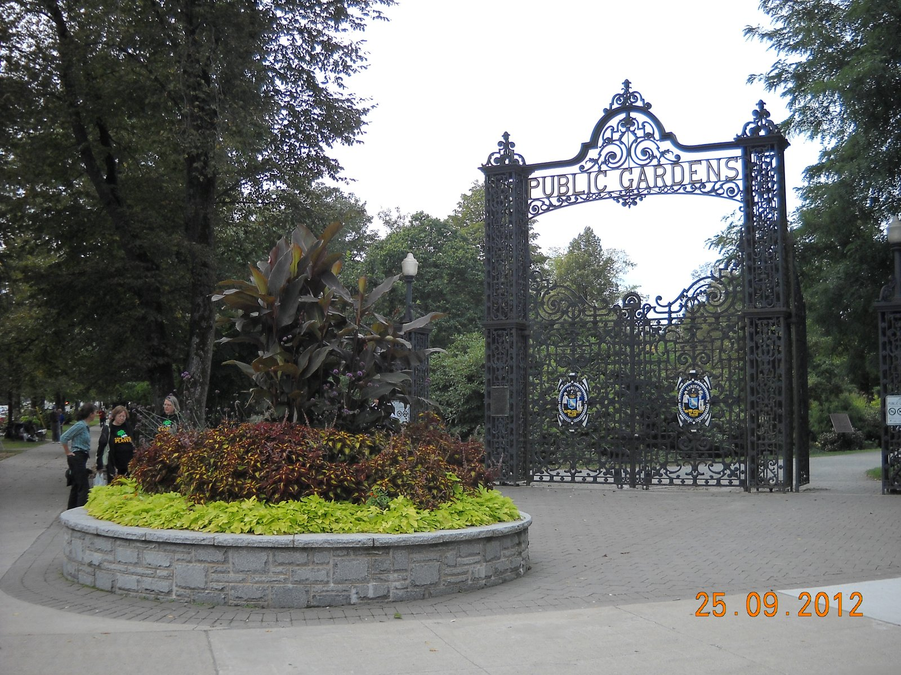
🌷 The Heart of Halifax
2 hr 30 min · 11:30 am, 2:45 pm · Activity level: Moderate · $75/adult · $57/child
From a Victorian garden to a hilltop fortress, a well-rounded look at how Halifax grew into one of Canada's most historic port cities.
🎟️ View & book on Celebrity Cruises
🥾 Point Pleasant Park Hike
2 hr 30 min · 11:30 am · Activity level: Strenuous · $79/adult · $59/child
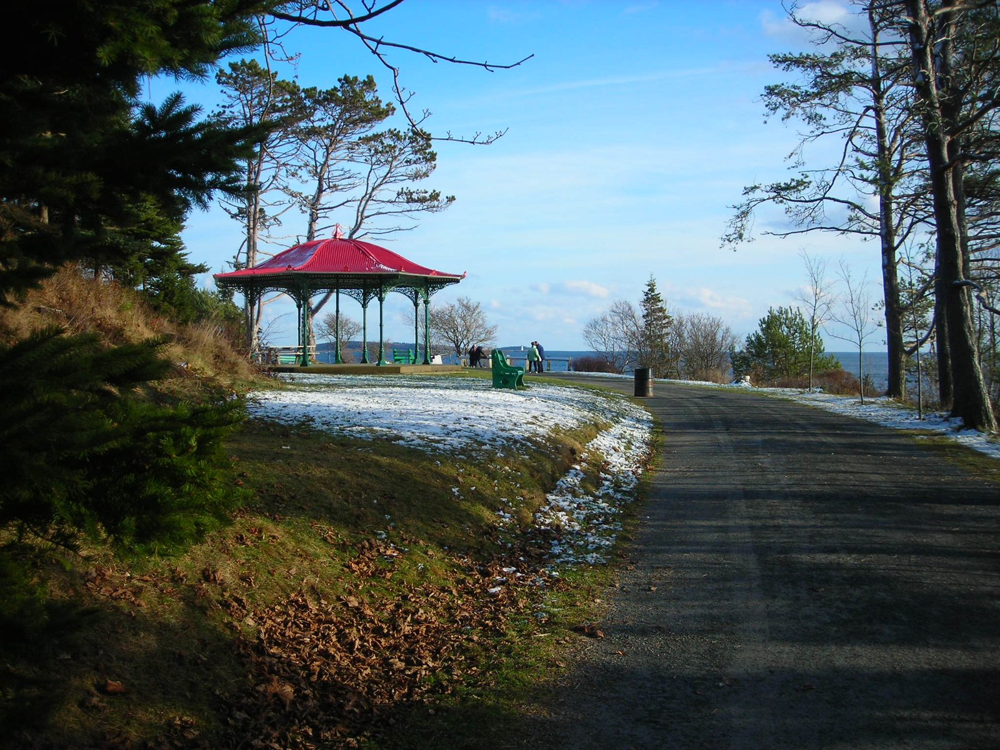
A guided walk through Point Pleasant Park's forested trails and ocean vistas, with stories of Halifax's military past along the way.
🎟️ View & book on Celebrity Cruises
🤳 Selfie Tour of the Best of Halifax & Dartmouth by Foot
3 hr · 11:00 am · Activity level: Moderate · $73/adult · $67/child
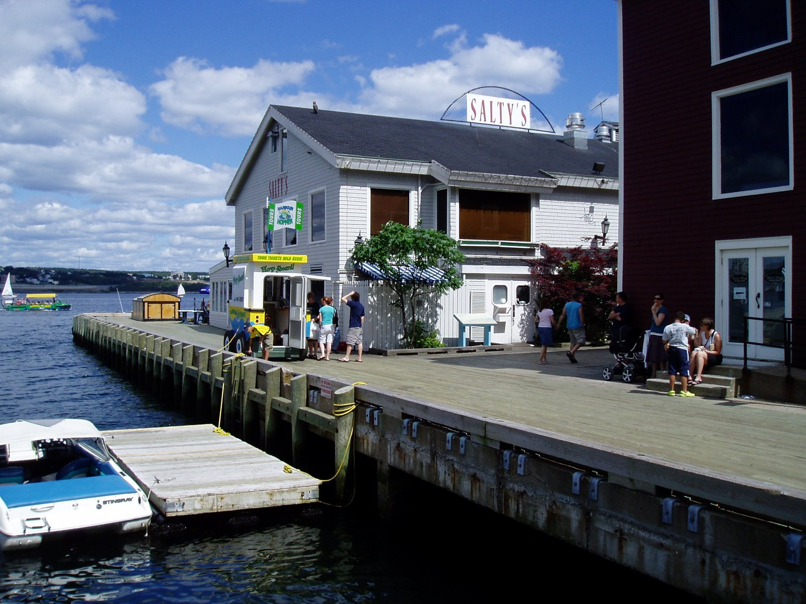
A photo-friendly walk along Halifax's waterfront and landmarks, with a ferry ride across to Dartmouth.
🎟️ View & book on Celebrity Cruises
🚶 Historic Halifax Walking Tour
2 hr · 12:15 pm, 3:15 pm · Activity level: Moderate · $40/adult · $36/child
A kilted guide leads a 2-hour taste of Halifax's maritime history along the waterfront boardwalk and Grand Parade.
🎟️ View & book on Celebrity Cruises
🍁 Coastal Charm and Maple Delight
3 hr 30 min · 11:00 am · Activity level: Moderate · $61/adult · $44/child
Combines Nova Scotia's rugged coastline with a stop for the province's famous maple syrup.
🎟️ View & book on Celebrity Cruises
🎻 Kick Up Your Heels at Maritime Ceilidh
2 hr · 12:30 pm · Activity level: Mild · $59/adult · $50/child
A lively downtown venue for live Irish and Scottish music and dance celebrating Nova Scotia's Celtic roots.
🎟️ View & book on Celebrity Cruises
🏛️ Halifax Past & Present
2 hr 30 min · 11:30 am, 2:45 pm · Activity level: Moderate · $68/adult · $55/child
From Victorian gardens to Titanic memorials, a scenic drive through the layers of Halifax's history.
🎟️ View & book on Celebrity Cruises
🦆 Destination Highlight: Halifax City and Harbour Duck Tour
1 hr · 1:00 pm, 2:30 pm · Activity level: Moderate · $76/adult · $68/child
An amphibious "Harbour Hopper" tour of Halifax that travels on both land and water.
🎟️ View & book on Celebrity Cruises
🚢 Destination Highlight: Titanic — The Halifax Connection
3 hr · 12:30 pm · Activity level: Mild · $85/adult · $76/child
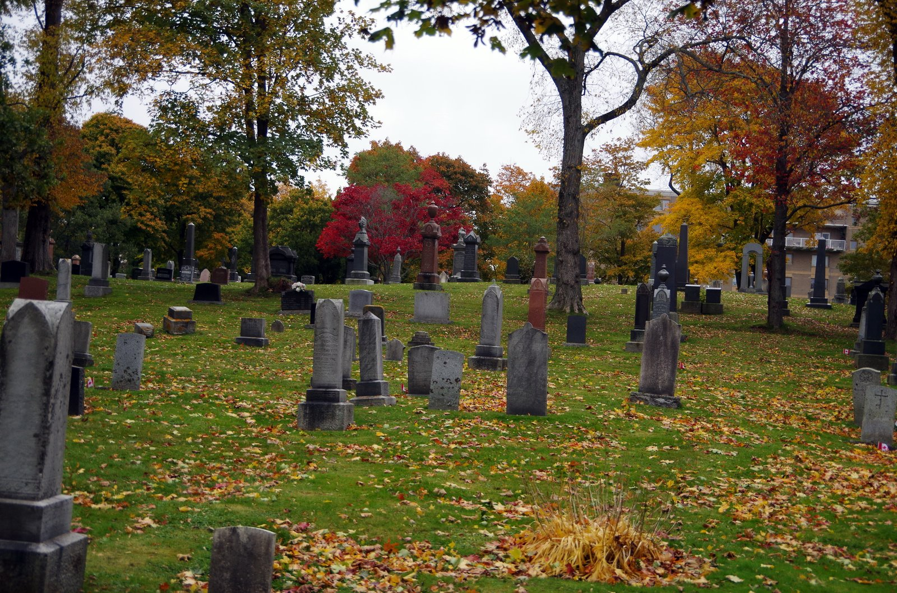
Discover Halifax's role after the Titanic disaster, including the cemetery where victims are buried.
🎟️ View & book on Celebrity Cruises
🏘️ Destination Highlight: Famous Peggy's Cove Fishing Village
3 hr 30 min · 12:00 pm · Activity level: Mild · $68/adult · $59/child
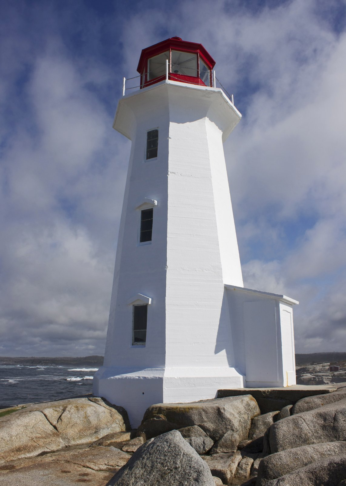
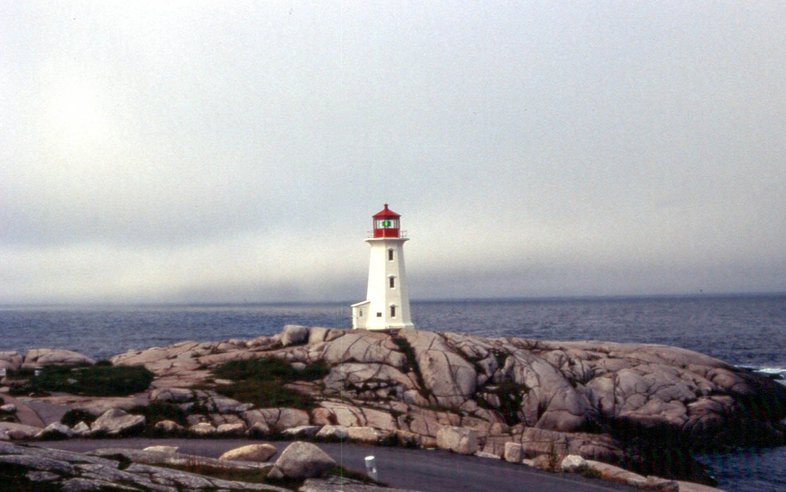
Nova Scotia's famed Lighthouse Route leads to the tiny, artist-inspiring fishing village of Peggy's Cove.
🎟️ View & book on Celebrity Cruises
⚓ Destination Highlight: Peggy's Cove and Titanic
4 hr · 12:30 pm · Activity level: Mild · $72/adult · $63/child
Combines Peggy's Cove with a visit to Fairview Lawn Cemetery, resting place of 121 Titanic victims.
🎟️ View & book on Celebrity Cruises
🚌 Destination Highlight: Hop On, Hop Off Halifax Sightseeing
At your leisure · Activity level: Mild · $59/adult · $55/child
London double-decker buses stopping at Halifax's landmarks — explore at your own pace, hop off wherever you like.
Day 4 — Sydney, Nova Scotia 🎻
Cape Breton Island's port city, and the jumping-off point for two of the region's biggest draws — the reconstructed 18th-century Fortress of Louisbourg and the sweeping coastal scenery of the Cabot Trail.
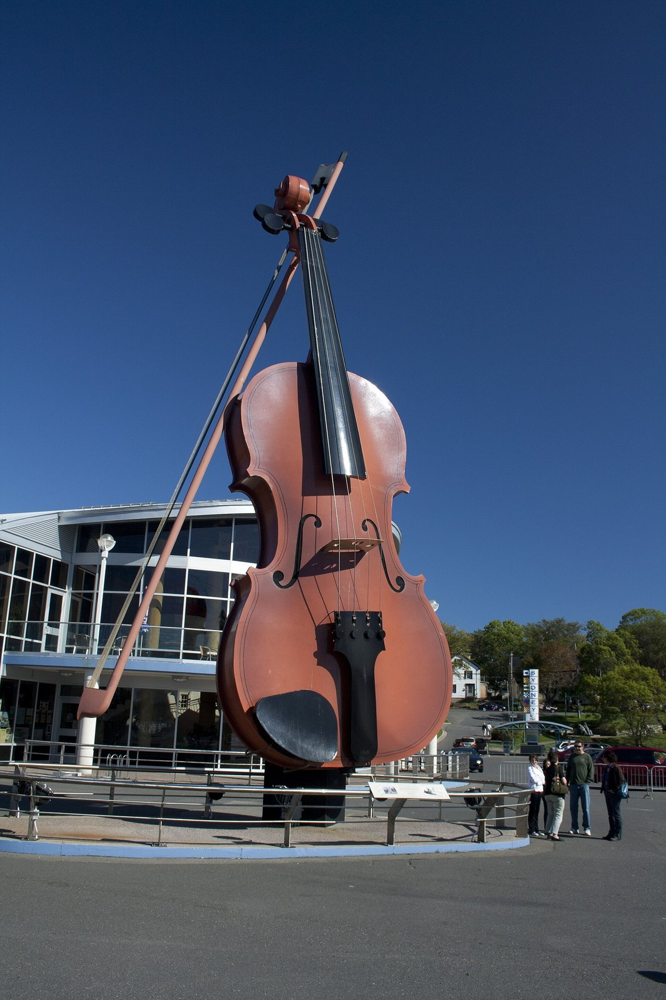
🚶 Destination Highlight: Old Sydney Walking Tour
2 hr · 11:15 am, 2:15 pm · Activity level: Moderate · $40/adult · $36/child
A walk through Old Sydney's museums and history, founded by Loyalists fleeing the American Revolution.
🎟️ View & book on Celebrity Cruises
⚓ Destination Highlight: Historical Sydney Highlights
1 hr 30 min · 2:30 pm, 4:30 pm · Activity level: Mild · $44/adult · $36/child
A scenic look at Sydney Harbour's landmarks and the smaller communities around one of the Atlantic's most strategic ports.
🎟️ View & book on Celebrity Cruises
🏰 Destination Highlight: Relive History at the Fortress of Louisbourg
3 hr 45 min · 10:30 am, 12:30 pm · Activity level: Moderate · $80/adult · $52/child
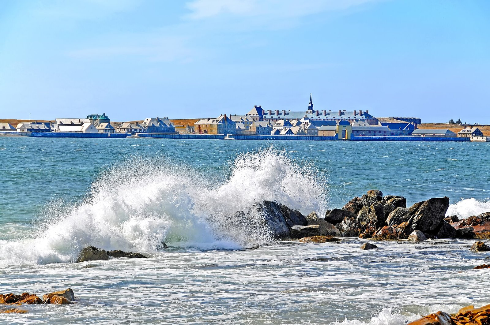
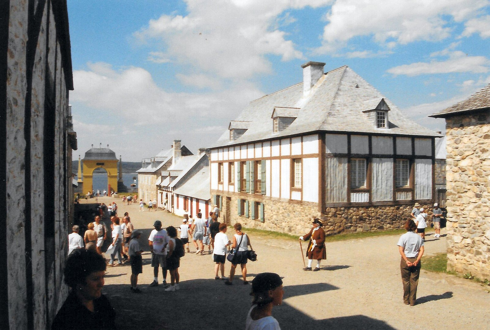
Step into Nova Scotia of 1744 at the reconstructed Fortress of Louisbourg, with costumed characters and period buildings.
🎟️ View & book on Celebrity Cruises
🎻 Destination Highlight: Spirit of the Fiddle — Sounds of Cape Breton
1 hr 30 min · 10:45 am, 12:45 pm · Activity level: Mild · $48/adult · $34/child
Starts at the World's Largest Fiddle and ends with a live performance of fiddlers, step dancers and singers.
🎟️ View & book on Celebrity Cruises
🏴 Destination Highlight: The Heart of the Island
3 hr · 11:00 am, 2:30 pm · Activity level: Moderate · $75/adult · $59/child
Nova Scotia is Latin for "New Scotland" — a drive through Cape Breton to the Highland Village, tracing the island's Scottish roots.
🎟️ View & book on Celebrity Cruises
📞 Destination Highlights: Bell Museum and Scenic Baddeck
3 hr 30 min · 10:30 am · Activity level: Mild · $60/adult · $45/child
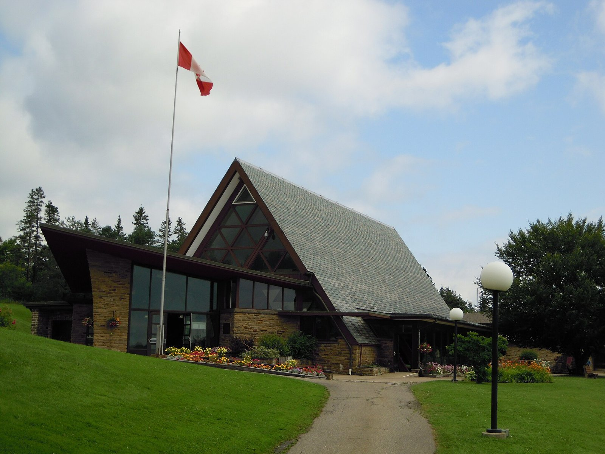
The picturesque village of Baddeck, where Alexander Graham Bell settled — visit the museum of his inventions.
🎟️ View & book on Celebrity Cruises
🤳 Selfie Tour of the Best of Sydney by Foot
2 hr 30 min · 10:30 am · Activity level: Moderate · $74/adult · $63/child
A lighthearted, photo-friendly walk through Cape Breton's port city, from the Merchant Mariners Monument to the Sydney Sign.
🎟️ View & book on Celebrity Cruises
💡 Destination Highlight: Lure of Lighthouses and Fortress of Louisbourg
3 hr 30 min · 10:30 am · Activity level: Mild · $85/adult · $76/child
Ocean scenery, an 18th-century lighthouse, and the historic Fortress of Louisbourg, a National Historic Site.
🎟️ View & book on Celebrity Cruises
🏭 Destination Highlight: Sydney's History, Color and Culture
2 hr · 11:00 am – 4:00 pm · Activity level: Mild · $85/adult · $76/child
Sydney's melting-pot heritage, from the 1785 Loyalist settlement to the steel-and-coal era of Whitney Pier.
🎟️ View & book on Celebrity Cruises
🚗 Destination Highlight: A Road Trip Along the Cabot Trail
7 hr · 10:45 am · Activity level: Moderate · $180/adult · $127/child
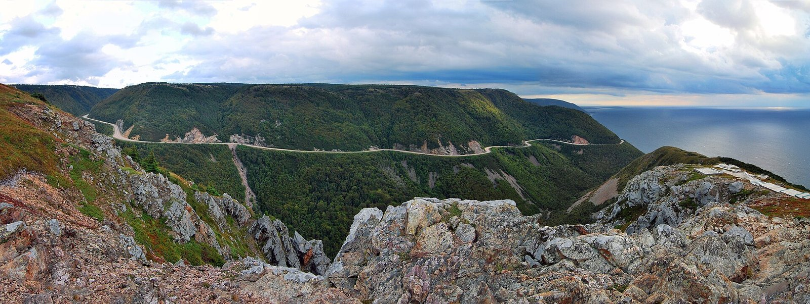
Follow Alexander Graham Bell's favorite drive through Cape Breton's dramatic, unspoiled scenery, with a buffet lunch included.
🎟️ View & book on Celebrity Cruises
🎒 Destination Highlight: The Sydney Bucket List Tour
6 hr 30 min · 11:00 am · Activity level: Mild · $136/adult · $123/child
A full day covering three of the area's must-see attractions, including the Fortress of Louisbourg.
🎟️ View & book on Celebrity Cruises
🍽️ Flavors of Sydney by Foot
2 hr 30 min · 2:00 pm · Activity level: Moderate · $127/adult · $114/child
From striking architecture to local dishes, a food-focused walk through the soul of Cape Breton.
Day 5 — At Sea 🌊
No excursions — a full day to enjoy the ship between Sydney and Québec City.
Days 6–7 — Québec City, Québec 🏰
An overnight port call — the ship is docked both days, so several excursions run on either day, or both. Château Frontenac and the cobblestone streets of Old Québec anchor the city; Montmorency Falls and Île d'Orléans are the countryside side trips.
Where an excursion runs on both days, its time line shows "Day 6:" and "Day 7:" separately with each day's own departure times — check both before you book.
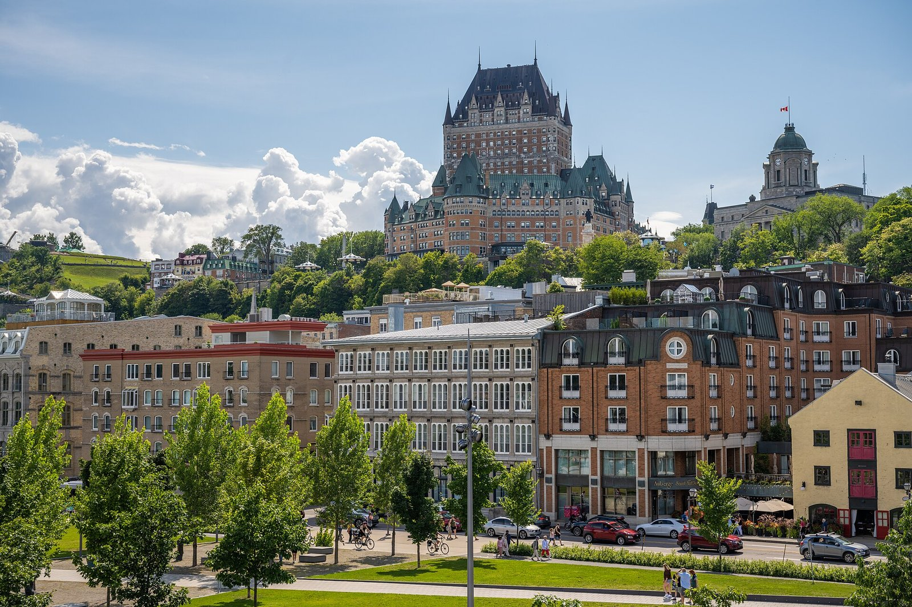
🏰 Destination Highlight: Grand Exploration of Québec
5 hr 30 min · Day 6: 12:30 pm · Day 7: 8:30 am · Activity level: Moderate · $264/adult · $236/child
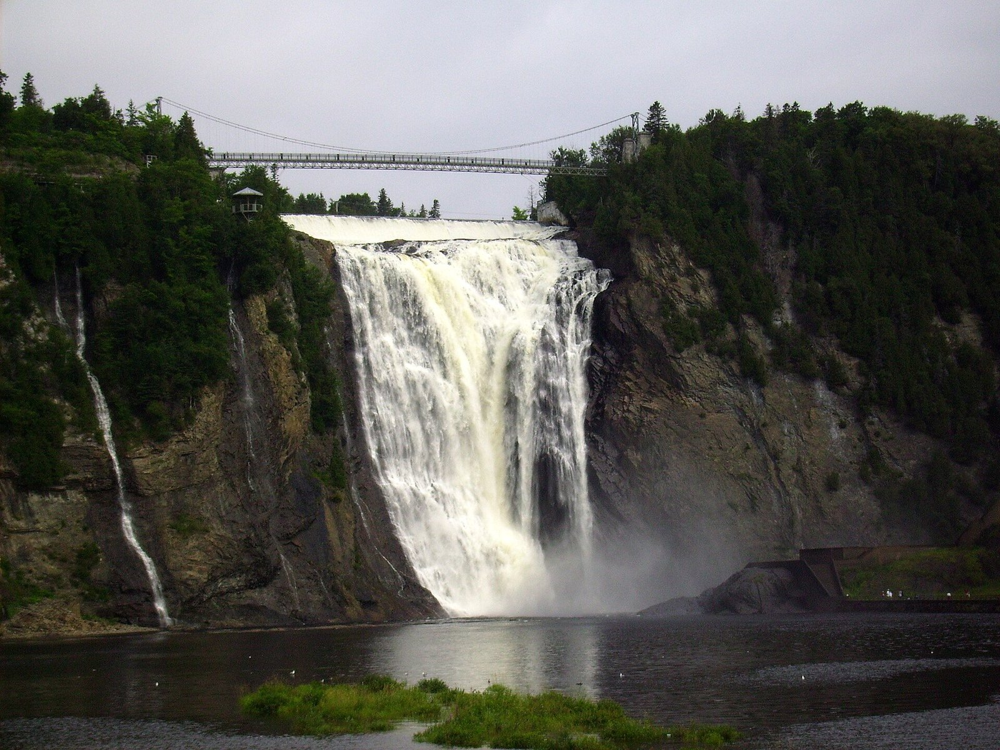
Landmarks of Québec City plus the surrounding countryside, with a photo stop at National Battlefields Park.
🎟️ View & book on Celebrity Cruises
🏛️ Destination Highlight: UNESCO's Historic Québec
2 hr · Day 6: 4:15 pm · Day 7: 12:30 pm · Activity level: Mild · $104/adult · $92/child
The historic and cultural heart of the first French city in North America, through Lower Town to Place Royale.
🎟️ View & book on Celebrity Cruises
💦 Destination Highlight: Québec City Tour and Montmorency Falls
3 hr · Day 6 only: 4:00 pm · Activity level: Mild · $128/adult · $116/child
A bus tour of historic Québec plus a stop at the thundering Montmorency Falls.
🎟️ View & book on Celebrity Cruises
🚶 Destination Highlight: Old Québec Walking Tour
3 hr · Day 6: 11:30 am · Day 7: 8:00, 11:30 am · Activity level: Moderate · $72/adult · $64/child
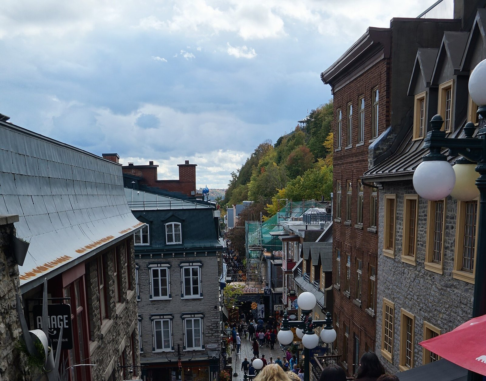
Cobblestone streets of the UNESCO World Heritage Lower Town, including the shop-lined Petit Champlain.
🎟️ View & book on Celebrity Cruises
🌾 Destination Highlight: Québec Countryside Tour
3 hr 15 min · Day 6: 11:30 am · Day 7: 8:00 am · Activity level: Mild · $170/adult · $153/child
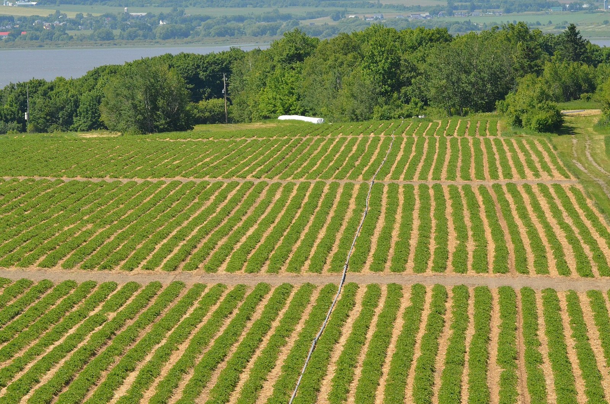
Away from the city to the Laurentian foothills, autumn color, and Montmorency Falls.
🎟️ View & book on Celebrity Cruises
👻 Small Group: Ghost Tour of Québec
2 hr · Day 6 only: 6:30 pm · Activity level: Moderate · $176/adult · $160/child
An evening walk through the Old Town's cobblestone streets with a costumed guide and Québec's darker history.
🎟️ View & book on Celebrity Cruises
🍷 Small Group: Walking Tour and Tasting
3 hr · Day 6 only: 1:00 pm · Activity level: Moderate · $51/adult · $46/child
Sights, sounds and tastes of Old Québec on an immersive walk through the UNESCO Old Town.
🎟️ View & book on Celebrity Cruises
⛪ Destination Highlight: Sainte-Anne-de-Beaupré and Copper Embossing Experience
3 hr 30 min · Day 6: 11:30 am · Day 7: 8:00 am · Activity level: Mild · $119/adult · $106/child
The Basilica of Sainte-Anne-de-Beaupré, revered as a "place of miracles," plus the ancestral art of copper embossing.
🎟️ View & book on Celebrity Cruises
🍇 Destination Highlight: The Beaupré Coast and St. Anne Canyon and Winery
4 hr · Day 6 only: 11:45 am · Activity level: Moderate · $168/adult · $152/child
The St. Lawrence waterway to St. Anne Canyon, carved into 900-million-year-old rock, plus a stop for local wine.
🎟️ View & book on Celebrity Cruises
🍁 Destination Highlight: An Evening at the Sugar Shack
3 hr 30 min · Day 6 only: 6:30 pm · Activity level: Mild · $136/adult · $124/child
Dinner, dancing and maple traditions at a Cabane à Sucre (Sugar Shack), with a Maple Museum visit.
🎟️ View & book on Celebrity Cruises
🚁 Helicopter Tour of Québec City
3 hr 15 min · Day 6: 1:15 pm · Day 7: 9:00 am · Activity level: Mild · $781/adult · $513/child
A bird's-eye pass over the Plains of Abraham and the Château Frontenac — the splurge excursion of this port.
🎟️ View & book on Celebrity Cruises
🫖 High Tea on Île d'Orléans
3 hr · Day 6 only: 1:30 pm · Activity level: Mild · $238/guest
A refined countryside tea at a wood-beamed tea house on Île d'Orléans, across the scenic bridge from the city.
🎟️ View & book on Celebrity Cruises
💦 Destination Highlight: St-Anne-de-Beaupré and Montmorency Falls
3 hr 15 min · Day 7 only: 7:45 am · Activity level: Mild · $104/adult · $92/child
The St. Anne Shrine, one of North America's most important Catholic sites, paired with Québec's tallest waterfall.
🎟️ View & book on Celebrity Cruises
🍓 Small Group: Island of Orleans Food Tour
3 hr 30 min · Day 7 only: 8:45 am · Activity level: Moderate · $280/adult · $219/child
Regional flavors of Île d'Orléans — nougat, jams, wine — at a nougat shop and a nearby winery.
🎟️ View & book on Celebrity Cruises
🚶 Small Group: Historical Québec Walking
2 hr 30 min · Day 6: 3:15 pm · Day 7: 8:30, 11:45 am · Activity level: Moderate · $34/adult · $29/child
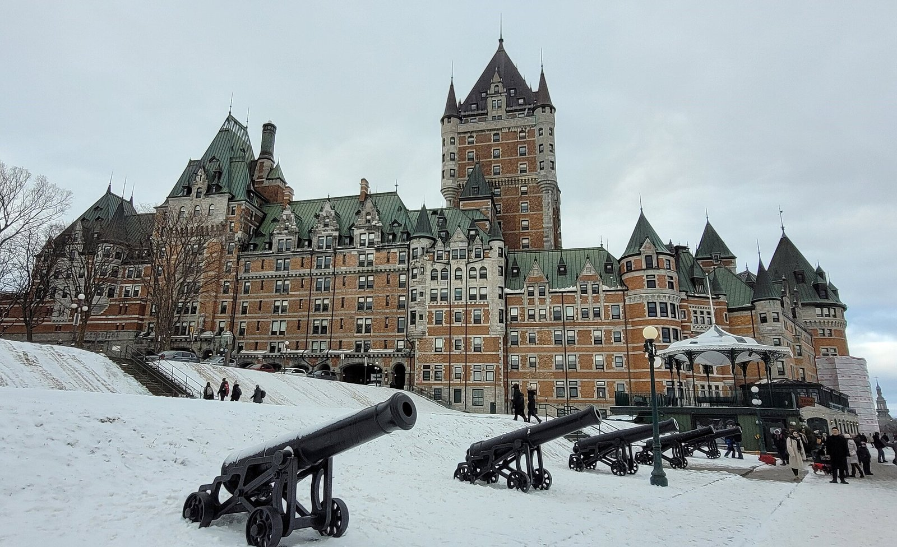
Nearly four centuries of history on foot through Place-Royale and Old Québec's cobblestone streets. The budget-friendly way to see the Old Town.
Day 8 — At Sea 🌊
No excursions — a full day to enjoy the ship between Québec City and Charlottetown.
Day 9 — Charlottetown, Prince Edward Island 🥧
PEI's capital — Anne of Green Gables country, red-soil farmland, the Confederation Bridge, and a lighthouse-dotted coastline, all within a short drive of the pier.
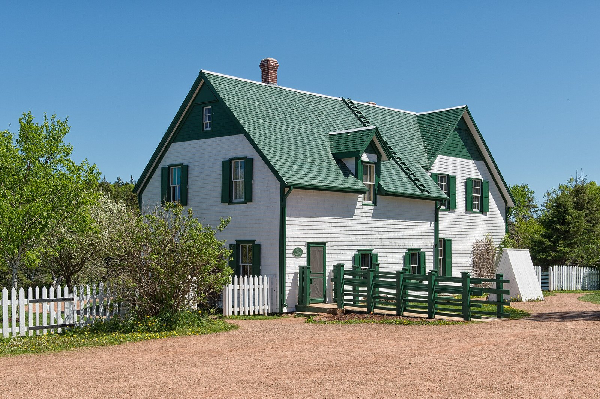
🤳 The Charlottetown Selfie Tour
2 hr 30 min · 8:00 am · Activity level: Moderate · $152/adult · $122/child
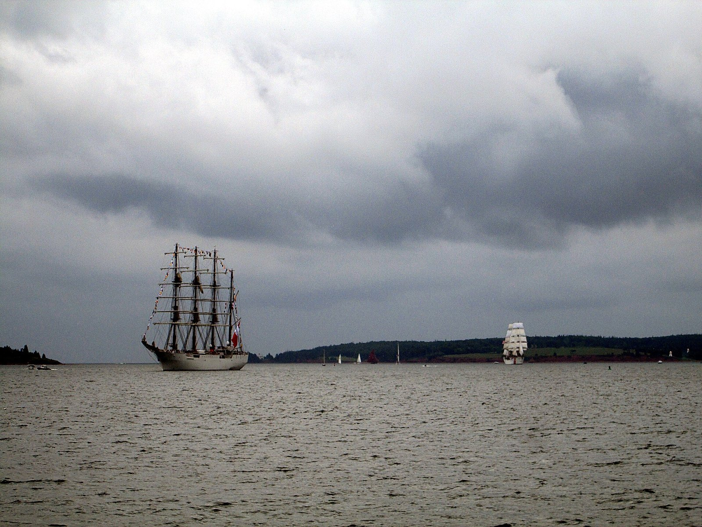
A photo-friendly mix of history and culture, starting at Prince Edward Battery and the city's landmark basilica.
🎟️ View & book on Celebrity Cruises
🦞 Destination Highlight: The Island's Finest Scenic Drive, Anne and Lobster
4 hr · 8:00 am, 11:30 am · Activity level: Moderate · $208/adult · $188/child
Seaside cliffs and farmland, the PEI National Park, and the setting behind Anne of Green Gables — plus a lobster lunch.
🎟️ View & book on Celebrity Cruises
📖 Destination Highlights: Anne of Green Gables and Island Drive
3 hr 30 min · 8:00 am, 12:00 pm · Activity level: Mild · $88/adult · $80/child
Green Gables, the farmstead behind L.M. Montgomery's beloved novel, plus the streets where Canada was born.
🎟️ View & book on Celebrity Cruises
💡 Destination Highlight: Lighthouses of PEI
3 hr · 8:30 am, 12:00 pm · Activity level: Moderate · $64/adult · $49/child
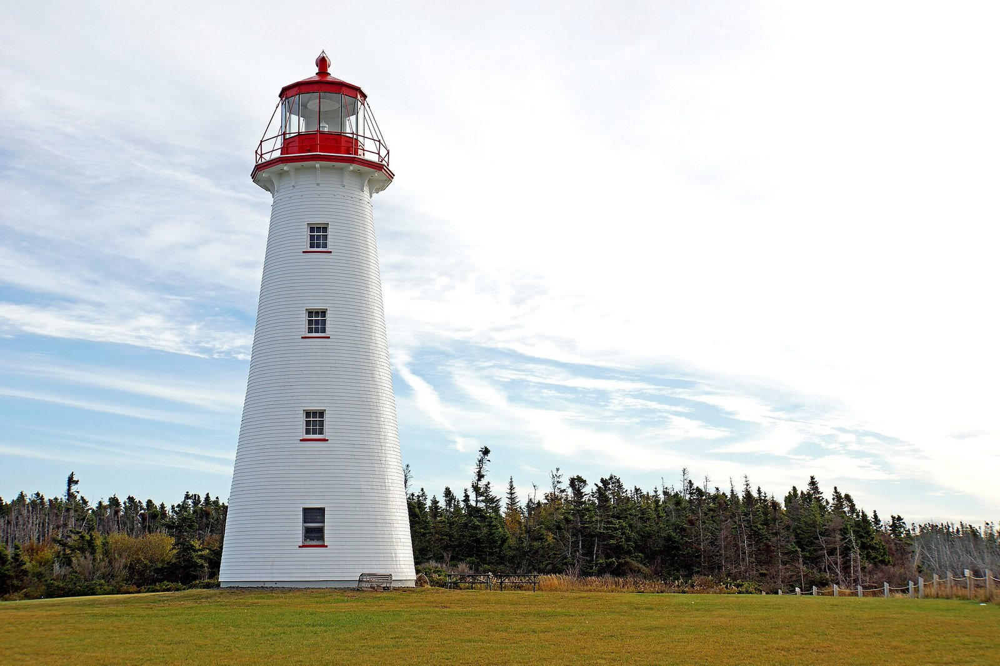
Point Prim, PEI's oldest lighthouse, plus a visit to the Wood Islands lighthouse.
🎟️ View & book on Celebrity Cruises
🌉 Destination Highlight: Panoramic Island Drive
3 hr 30 min · 7:45 am, 11:45 am · Activity level: Mild · $72/adult · $64/child
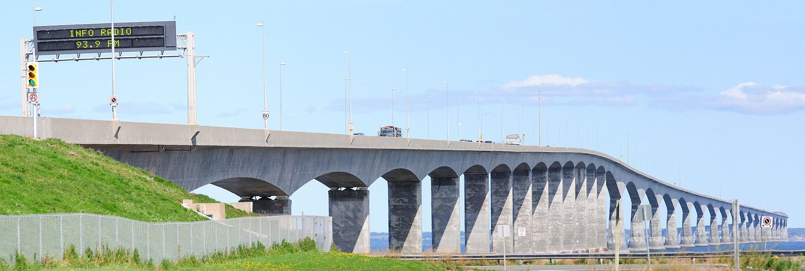
A motor-coach loop of Charlottetown's landmarks, with shopping time and a stop at Confederation Bridge.
🎟️ View & book on Celebrity Cruises
🚶 Small Group: Charlottetown Walking Tour
1 hr 30 min · 9:00 am, 11:30 am · Activity level: Strenuous · $24/adult · $20/child
The waterfront and heritage district of Canada's smallest provincial capital, on foot.
🎟️ View & book on Celebrity Cruises
🍬 Charlottetown's Sweet Spots Walking Tour
3 hr · 10:00 am · Activity level: Moderate · $104/adult · $83/child
A decadent, bite-by-bite tasting walk through the historic streets of PEI's capital.
🎟️ View & book on Celebrity Cruises
🌉 Destination Highlight: City to Sea Panoramic View
6 hr 30 min · 7:30 am, 8:30 am · Activity level: Mild · $207/adult · $165/child
A panoramic drive plus Confederation Bridge, with a lobster roll lunch at Fisherman's Wharf.
🎟️ View & book on Celebrity Cruises
🚌 Destination Highlight: Double Decker Ride and Stroll
1 hr 30 min · 8:15 am – 12:45 pm · Activity level: Moderate · $59/adult · $55/child
A double-decker bus tour, a guided walk, and free time to explore — the well-rounded Charlottetown sampler.
🎟️ View & book on Celebrity Cruises
🍺 Brewventure: Canada's Origins Through a Beer Tasting Walk!
3 hr · 11:30 am · Activity level: Moderate · $143/guest
Charlottetown's brewing culture paired with its role in Canadian history, on a downtown walking tour.
🎟️ View & book on Celebrity Cruises
🌾 Scenic Tour of Prince Edward Island
3 hr · 8:00 am, 12:30 pm · Activity level: Moderate · $53/adult · $48/child
The rolling countryside and seaside vistas that inspired L.M. Montgomery's novels — a relaxed, leisurely drive.
🎟️ View & book on Celebrity Cruises
🐴 Small Group: A Trot About Town
1 hr · 8:30 am – 12:15 pm · Activity level: Mild · $51/adult · $46/child
A horse-drawn wagon ride past Charlottetown's Victorian buildings and the Confederation Centre of the Arts.
Day 10 — At Sea 🌊
No excursions — a full day to enjoy the ship between Charlottetown and Portland.
Day 11 — Portland, Maine 💡
The last full port day — Maine's most-photographed lighthouse, the Old Port's brick streets, and Kennebunkport's summer-home charm, plus two longer rail excursions for anyone who wants a full day off the ship.
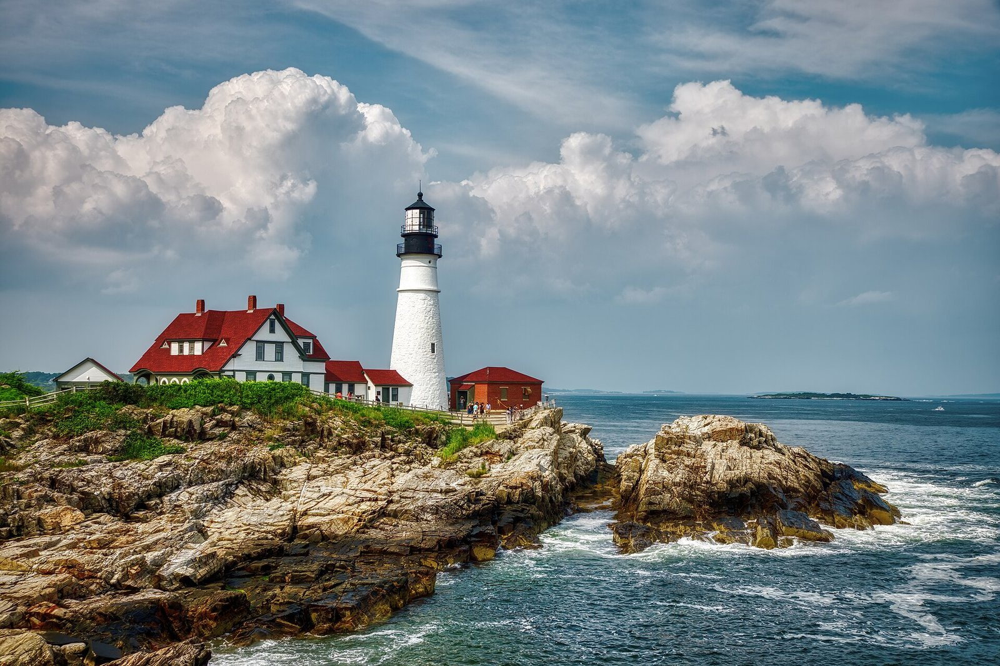
🚶 Small Group: Portland Walking Tour — Beyond the Old Port
2 hr · 11:45 am, 2:15 pm · Activity level: Moderate · $39/guest
Portland's neighborhoods beyond the Old Port, from the Portland Observatory to the Eastern Promenade.
🎟️ View & book on Celebrity Cruises
🦞 Peaks Island Lobster Bake Tour
3 hr 30 min · 1:45 pm · Activity level: Moderate · $254/adult · $203/child
A ferry across Casco Bay to Peaks Island for a classic New England lobster bake.
🎟️ View & book on Celebrity Cruises
📸 Destination Highlight: Portland Panoramic
2 hr · 10:45 am · Activity level: Mild · $86/adult · $49/child
The Eastern Promenade and downtown Portland's restored 19th-century architecture, by motor coach.
🎟️ View & book on Celebrity Cruises
🍽️ Small Group: Culinary Walking Tour of Portland
2 hr · 1:30 pm · Activity level: Moderate · $206/adult · $143/child
"America's foodiest small town" — a leisurely tasting walk through the working waterfront and Old Port.
🎟️ View & book on Celebrity Cruises
🚂 Destination Highlight: Conway Scenic Railroad
7 hr 30 min · 9:30 am · Activity level: Moderate · $386/adult · $306/child
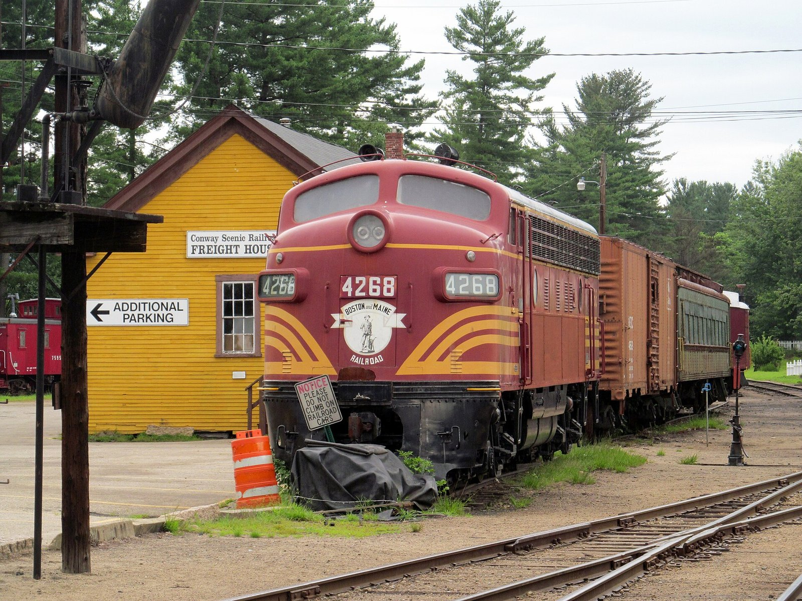
Undertake a captivating journey through stunning landscapes and charming New England towns aboard the historic Conway Scenic Railroad.
🎟️ View & book on Celebrity Cruises
⛵ Destination Highlight: Kennebunkport and Dock Square
3 hr 30 min · 10:30 am, 3:30 pm · Activity level: Mild · $73/adult · $52/child
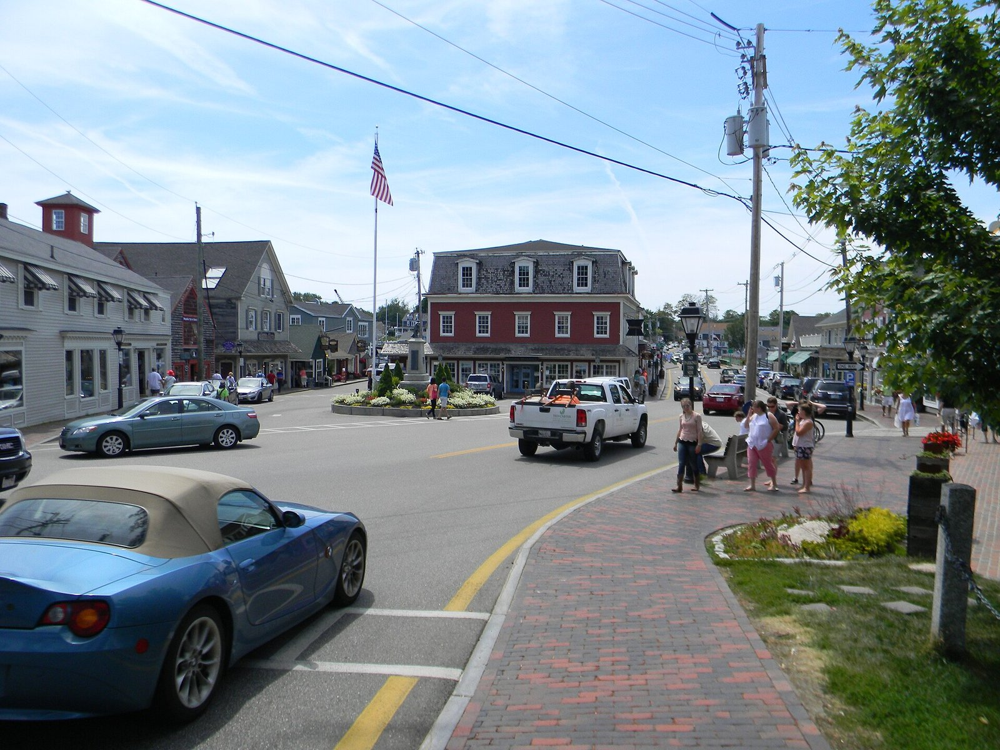
The picturesque summer-home village of Kennebunkport and the shops of Dock Square.
🎟️ View & book on Celebrity Cruises
🦞 Destination Highlight: Best of Maine
7 hr · 11:30 am · Activity level: Moderate · $260/adult · $211/child
Maine's rugged coast, Fort Williams Park, and a lobster roll lunch in Kennebunkport — a full sampler of the state.
🎟️ View & book on Celebrity Cruises
🚋 Destination Highlight: Kennebunkport & Seashore Trolley Museum
4 hr · 2:00 pm, 2:45 pm · Activity level: Mild · $115/adult · $68/child
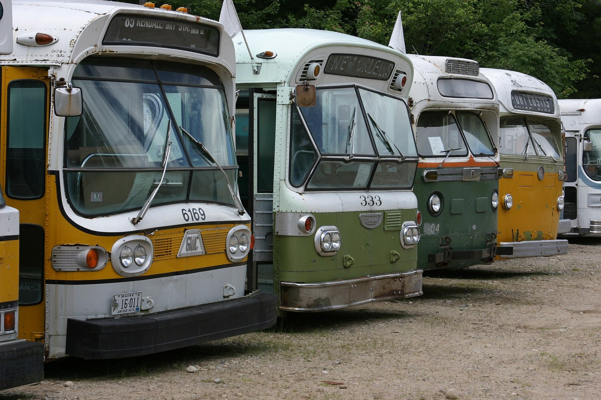
Kennebunkport's rocky coast plus a ride on a vintage trolley at the Seashore Trolley Museum.
🎟️ View & book on Celebrity Cruises
💡 Destination Highlight: Portland Highlights and Lighthouse
2 hr · 11:00 am · Activity level: Mild · $92/guest
The Old Port's red-brick warehouse district, now home to shops and pubs, plus a Portland-area lighthouse.
🎟️ View & book on Celebrity Cruises
⛴️ Destination Highlight: Portland by Land and Sea
4 hr · 10:45 am · Activity level: Moderate · $192/adult · $154/child
The Old Port on land, then Maine's most-photographed lighthouse, Portland Head Light, from the water.
🎟️ View & book on Celebrity Cruises
💡 Destination Highlight: Lighthouses of Maine
3 hr 30 min · 2:30 pm, 3:00 pm · Activity level: Mild · $109/adult · $87/child
The Liberty Ship Memorial and three of Maine's historic lighthouses along its rocky coastline.
🎟️ View & book on Celebrity Cruises
⛵ Destination Highlight: Kennebunkport Panoramic and Scenic Cruise
4 hr 45 min · 10:30 am · Activity level: Moderate · $136/adult · $109/child
A drive past Kennebunkport's Federal and Victorian-style mansions, then a boat cruise along the coastline.
Day 12 — Boston, Massachusetts 🔔
Disembarkation day — both remaining excursions are built for it, ending with an airport drop-off for anyone flying out same-day.
🔭 View Boston (With Airport Drop-Off)
3 hr 30 min · 9:00 am · Activity level: Mild · $134/adult · $101/child
360-degree views and interactive exhibits at an observation deck, covering the essentials of the city before your flight.
🎟️ View & book on Celebrity Cruises
🚶 Destination Highlight: Scenic Boston City Tour (With Airport Drop-Off)
2 hr 30 min · 9:00 am · Activity level: Mild · $106/adult · $79/child
Freedom Trail landmarks — the Old State House, Beacon Hill — on the way to a same-day flight home.
Glossary
| Term | Definition |
|---|---|
| Activity level: Mild | Easy walking on mostly even ground — comfortable for most guests. |
| Activity level: Moderate | Some walking or standing over a longer stretch, possibly on uneven ground. |
| Activity level: Strenuous | Extended walking, hills, stairs, or a faster pace than the other two levels. |
| Cabot Trail | A scenic highway looping through the Cape Breton Highlands, Nova Scotia. |
| Ceilidh | Gaelic for "visit" — a traditional gathering of live folk music and dance, common in Nova Scotia's Celtic communities. |
| Home port / round-trip | This cruise departs from and returns to the same city — Boston — rather than ending somewhere different. |
| Overnight port call | A stop where the ship stays docked into the next day, giving two separate excursion days at one port — Québec City on this cruise. |
| Sea day | A day with no port call — the ship is underway all day, and no shore excursions are offered. |
| Shore excursion | An optional, separately booked tour or activity at a port, run by a local operator and sold through the cruise line. |
| Shorex | Cruise-industry shorthand for "shore excursion" — shows up in the booking URLs throughout this guide. |